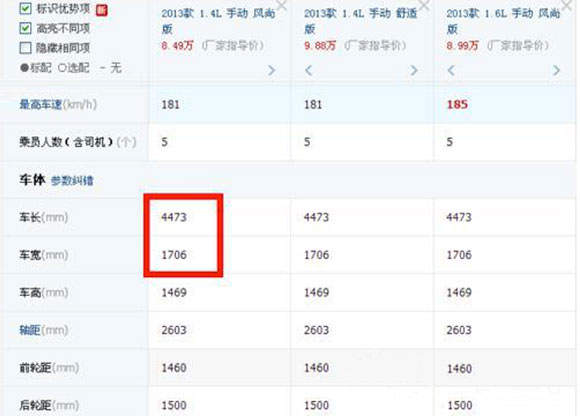
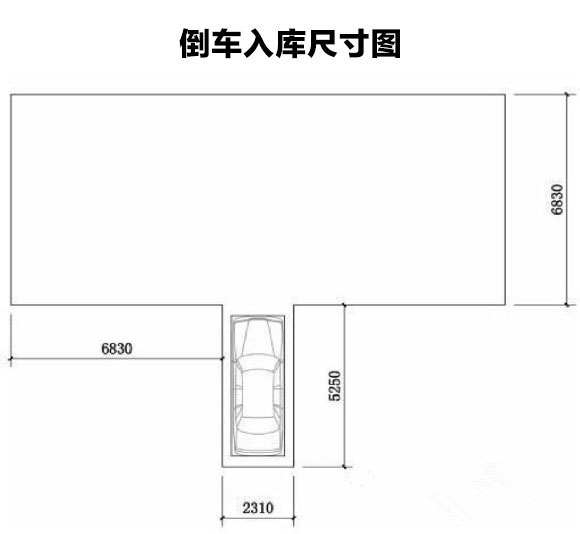
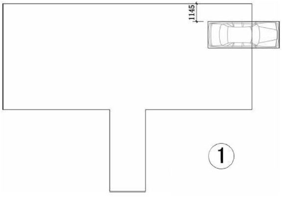
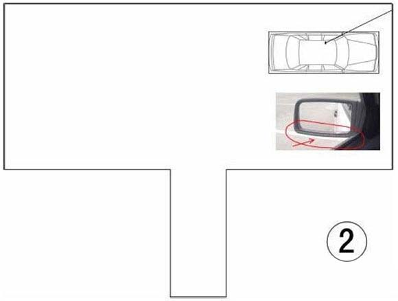
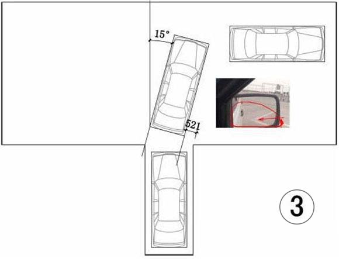
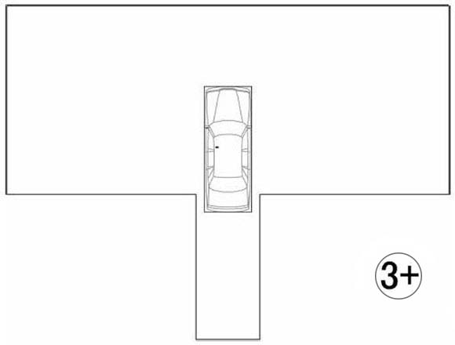
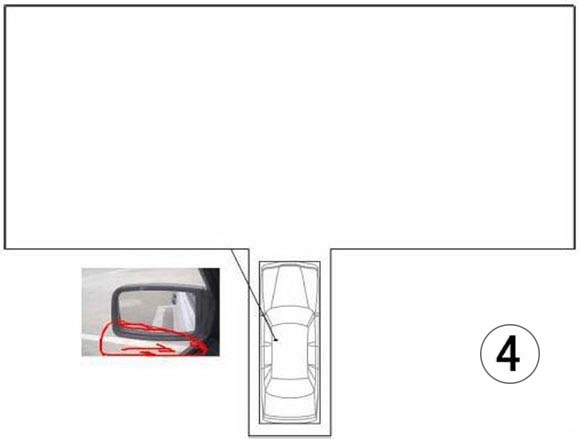
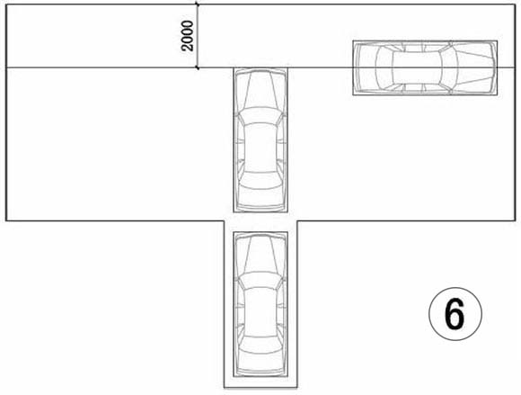

自从驾考改革之后，考场上已经看不见标杆了，有的只是地上的黄线，而且还取消了移库。没有标杆这倒库可要怎么倒进去呀，今天就给大家准备全新的科目二倒车入库技巧。
1不按规定路线、顺序行驶的，不合格;
2车身出线的，不合格;
3倒库不入的，不合格;
4中途停车的(静止超过3秒钟)，不合格;
5超过4分钟，不合格。
1库宽=车身宽(不含倒车镜)加60cm；
2库位长=车身长加70cm；
3车道宽=车身长的1.5倍；
4车库距控制线=车身长的1.5倍。

将车开到场地右侧，身体与右侧控制线齐平，切换到倒挡，开始倒车。

身体左倾五厘米，视线透过左侧反光镜下沿看到控制线，开始向右打方向，打死(一圈半)。
在打方向时注意控制好车速，既不要太快，也不要停止。

当车开到如图位置：车身偏斜15度左右，从右反光镜看车身与车库线距离如图，可以辨别车可以进入车库，方向不变，继续倒车。
1此时要准备车身转正;
2车身位置不合适时要会修正。

此时车身回正，将方向打正(向左打一圈半，使大圈向前)，垂直倒车。

透过左侧反光镜下沿看到控制线，开始将离合与刹车同时缓慢踩死。
将变挡杆调到1档，准备出库。

开始出库，眼睛目视车头前方，当车头线没(mo)过前控制线(此时车头距离前控制线1.5m~2m左右)，将方向向右打死
控制好车速，视线目视前方，当车身回正，将方向打正(向左打一圈半，使大圈向前)

用脚尖控制 离合，便于控制半联动
当方向打死时松一下离合，防止车停止